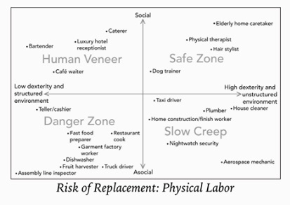
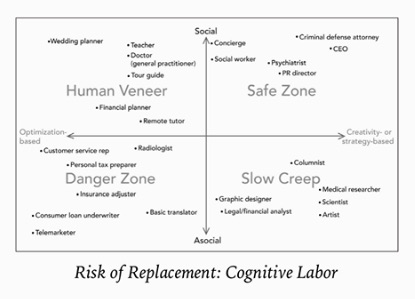

The difference waves of AI
- Internet AI - Facebook, Netflix, Google search
- Business AI - Palantir
- Perception AI - Tesla cars
- Autonomous AI - Tesla self driving, Google self driving
Key locations
- Silicon Valley
- Zhong Guan Cun - Beijing
State of the Union
- We are in the stage of implementation/application as opposed to RnD
having access to more data is more important than have expertise to do more RnD
- having solid AI engineers is more important than AI researchers
- We are still far from general AI
- Key ingredients
data
- computing
- maybe work of strong AI algorithms engineers
Key differences between eco-systems
- Silicon Valley businesses are mission and core values driven while Chinese businesses are pragmatically focused on profitability.
- Silicon Valley businesses stay in bits and binaries offloading the brick and mortar to external vendors vendors while Chinese businesses extend their business model into the brick and mortar (online to offline)
- Silicon valley prefers one size fit all strategy, Chinese businesses utilized localized solutions often investing/acquiring in local startups
- Americans treat search engines like Yellow Pages (come and leave fast) while Chinese treat search engines like shopping mall (come to linger around long)
- Silicon Valley is adversed to copying preferring to be unique Chinese business copy the heck out of each other
Chinese Advantage
- Abundant data - quality and quantity aided by their online to offline initiatives
- hungry entrepreneurs
- AI scientist
- AI friendly policy environment - strong emphasis by Chinese government
- Hardware manufacturing know how - Shen Zhen
unparalleled supply chain flexibility - XiaoMi
Silicon Valley Advantage
- Microchip manufacturing know-how
Trends within the Chinese eco-system
- Darwinian eco-system has lead to extreme levels of competition
- Chinese companies have already moved past the stage of clone Silicon Valley business models
- Businesses innovate to build a defensive moat around themselves. Local businesses have advantage, with no timezone differences to deal with, decision making is relatively faster.
- Online to offline
an essential ingredient to building strategic moats
- caused the decline of cash use
- Chinese government information systems will be able to leap frog US government information systems
Policy approaches
- Google - impeccable safety
- Tesla / China - trial by fire
- key to winning the Autonomous AI race
is the bottleneck technology (Silicon Valley) or policy (China)?
Key concerns
 
- having cheap labor is no longer going to be a source of advantage in a world heavily powered by automaton. Developing countries hoping to employ this well tested strategy to progress will not be able to do so anymore
- Estimated 60% potential job loss worldwide barring policy interventions
- Job loss probability assessment
physical labor
environment - unstructured versus structure
- tasks nature - level of dexterity versus high dexterity
- cognitive labor
social - high versus low
- cognitive - optimization based versus creativity/strategy based
- AI replacement approach
single tasks approach
- ground up rethink re-imagination
- A population of irrelevant (no longer employable) as opposed to unemployed
Tackling Key concerns
- Silicon valley - reduce, retrain and redistribute
- Kai Fu Lee - stipends for care, service, education
New promise
- Humans freed up from repetitive tasks can now focus on becoming more human oriented
Related readings
- *Disruptor*, Zhou
- www.Arvix.org - an online repository of scientific papers
- Folding Beijing - Hao JingFang
{kind=link}
{kind=link}